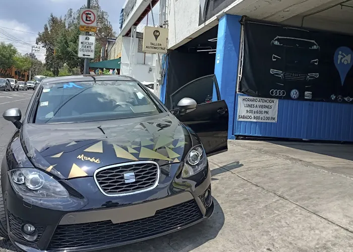
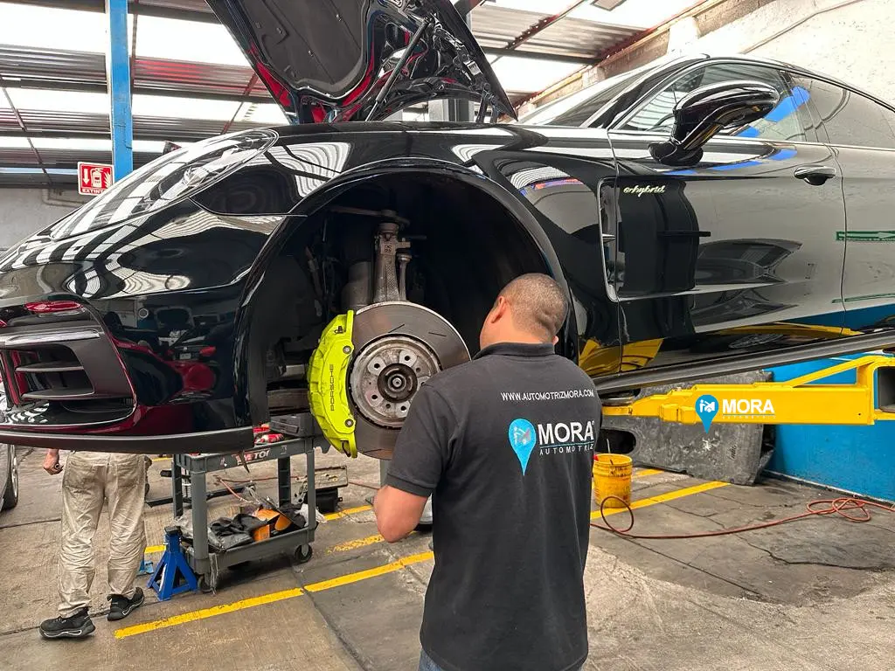

Our Mission: To provide the best service overall, satisfying the needs of our clients, with the highest possible standard of quality, at the best cost and in the shortest possible time.
Our Vision: To consolidate ourselves as the best mechanical services company in Mexico, continuously exceeding international standards, maintaining a close relationship of trust and honesty, achieving the satisfaction of each of our business partners.

We are a company founded in January 2015 in Mexico City, initially established as an independent workshop specializing in VAG (Audi, SEAT, VW), Mini, BMW, and Mercedes. Our capabilities are not limited to VAG; we can service all makes and models available in the Mexican market. Thanks to the excellent performance of our qualified staff and their extensive market knowledge, we are increasingly solidifying our position as industry leaders, with a strong community of satisfied customers who trust us because we understand and address their needs. For these reasons, our workshop is one of the best service providers in Mexico City.
Our Values: Responsibility, Honesty, Respect, Trust, Spirit of Service.
